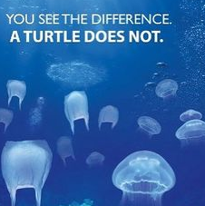

SHRINK YOUR FOOTPRINT
When it comes to our carbon footprints most of us on this island would need shoes fit for Bigfoot. Get informed, make conscious decisions.
Reduce.
-BYOB, Bring Your Own Bag
-Go topless! Most lids are made of #6 plastic, polystyrene, more commonly known as styrofoam. It contains carcinogens and is a bitch to try to recycle on our little island. So "free the nipple" or whatever and ditch your tops.
-Eat the uglies, bruised produce needs love too.
-Help stop mindless food waste, this is what the common expiration dates actually mean:
- SELL BY- stores can't display the product for sale after this date but it is still good for 7-10 days after this date. Meat should be frozen on or before this date but it is ok to defrost and eat it at a later date, not a safety date.
- BEST IF USED BY (OR BEFORE)-recommended date for best flavor or quality, not a safety date. Use your best judgement.
- USE-BY-reccomnded date for use of the product while at peak quality determined by the manufacturer, not a safety date.
- EXPIRATION DATE-refers to the last date the product should be eaten or used. After this day proceed at your own risk and discretion.
-If it's broken, try to fix it. You don't always need NEW.
-Bike or Walk, it's not that far, you're not that lazy.
-Give a hoot don't pollute! You will pass a trash receptacle somewhere in the near future. Hold onto your garbage, or your cigarette butts won't be the only thing hitting the curb.
-Carving your initials into living bark spells O-U-C-H for the tree. If you must leave your mark, do so on a fallen tree. Trees shouldn't have to die with your crappy relationship.
-Buy less products with packaging
-Stop balloon releases! The balloons will eventually land and damage our environment and kill countless animals. Even latex ballons labeled as biodegradable cause plenty of damage in the 6 months-4 years it takes them to decompose.
-Use less water and eletricity. Skip a shower or two, use natural lighting if it's daytime. Turn it off if you're not using it!
-Eliminate or minimize your participation in animal agriculture through consumption. A 2006 study by the United Nation’s Food and Agriculture Organization (FAO) finds that 18% of global greenhouse gas emissions is directly attributable to livestock production, which is more than the emissions attributable to the entire transportation sector.
Reuse.
-Say no to disposables, ask for reusuable utensils or bring your own.
-Upcycle, turn old materials into art
-Donate clothes and electronics to friends or appropriate drop off bins
-Donate food, including expired items to local food drives. Long Island Food Not Bombs is a great vegetarian food drive with locations across the island.
-Make your stale bread into croutons or breadcrumbs to use at a later date, stop feeding it to the ducks. Feeding ducks bread contributes to duckling malnutrition, overcrowding, pollution, and diseases. Great foods to feed ducks includes:
- -halfed grapes, strawberries tops and all, broccoli, stalks included
- -cracked corn, barley, oats, birdseed or other grains
- -frozen peas or corn kernels that have been defrosted
- -duck feed pellets available from farm supply stores
Recycle.
Known how, when, and where to recycle on this island!
| Plastic Type | Where to Recycle |
|---|---|
| #1 PET (PETE)-polyethylene terephthalate | Recycled curbside in Nassau and Suffolk County |
| #2 HDPE-high-density polyethylene | Recycled curbside in Nassau and Suffolk County |
| #3 V (PVC)-polyvinyl chloride | Recycled curbside in Oyster Bay, Glen Cove, Long Beach, Babylon, Riverhead, and Huntington |
| #4 LDPE-Low-density polyethylene | Bottles recyclable in Glen Cove, Long Beach, Babylon, Riverhead and Huntington |
| #5 PP-polypropylene | Bottles recyclable in Glen Cove, Long Beach, Babylon, Riverhead and Huntington |
| #6 PS-polystyrene (STYROFOAM) | Huntington residents can bring their polystyrene, excluding utensils and food packaging to The Recycling Center at 641 New York Avenue. The Alliance of Foam Packaging Recyclers offers a mailback program for all US residents. If polystyrene is something you get a lot of, you might be able to sell it at Recycled Plastic Markets Database |
| #7 OTHER (or unmarked)-Any plastic other than 1-6, or mixed | Many #7 plastics can’t be recycled due to their composition. #7 water bottles can be recycled curbside in Oyster Bay, Glen Cove, Long Beach, Babylon, Riverhead and Huntington |
Most towns follow a pick-up shcedule of bottles and cans alternating every Wednesday with pick-up of papers, except during holiday weeks when they will be picked up on your regular garbage day (Thursday or Friday). A quick internet search will provide you with a digital copy of your town's schedule.